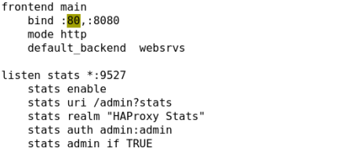

一、HAPrxoy介绍
HAProxy是一个使用C语言编写的自由及开放源代码软件，其提供高可用性、负载均衡，以及基于tcp和
http的应用程序代理。
mode http：七层反向代理，受端口数量限制
mode tcp：四层反向代理，不受套接字文件数量限制
官方网站：
官方文档：
http://cbonte.github.io/haproxy-dconv/
HAProxy特别适用于那些负载特大的web站点，这些站点通常又需要会话保持或七层处理。HAProxy运行
在当前的硬件上，完全可以支持数以万计的并发连接。并且它的运行模式使得它可以很简单安全的整合进
您当前的架构中， 同时可以保护你的web服务器不被暴露到网络上。
HAProxy实现了一种事件驱动, 单一进程模型，此模型支持非常大的并发连接数。多进程或多线程模型受
内存限制 、系统调度器限制以及无处不在的锁限制，很少能处理数千并发连接。事件驱动模型因为在有更
好的资源和时间管理的用户空间(User-Space) 实现所有这些任务，所以没有这些问题。此模型的弊端是，
在多核系统上，这些程序通常扩展性较差。这就是为什么他们必须进行优化以 使每个CPU时间片(Cycle)做
更多的工作。
建议：生产环境运行在单进程模型下，便于分析，排查问题
二、HAProxy服务配置
程序环境：
主程序：/usr/sbin/haproxy
主配置文件：/etc/haproxy/haproxy.cfg
Unit file：/usr/lib/systemd/system/haproxy.service
配置段：
global：全局配置段
进程及安全配置相关的参数
性能调整相关参数
Debug参数
用户列表
peers
proxies：代理配置段
defaults：为frontend, listen, backend提供默认配置；
fronted：前端，相当于nginx, server {}
backend：后端，相当于nginx, upstream {}
listen：同时拥前端和后端
简单的配置示例：
frontend web
bind *:80
default_backend websrvs
backend websrvs
balance roundrobin
server srv1 172.16.100.6:80 check
server srv2 172.16.100.7:80 check
global配置参数：
进程及安全管理：chroot, daemon，user, group, uid, gid
log：定义全局的syslog服务器；最多可以定义两个；
log [len
nbproc
ulimit-n
性能调整：
maxconn
Sets the maximum per-process number of concurrent connections to
总体的并发连接数：nbproc * maxconn
maxconnrate
Sets the maximum per-process number of connections per second to
maxsessrate
maxsslconn
Sets the maximum per-process number of concurrent SSL connections to
spread-checks <0..50, in percent>
三、实验：实现HAProxy反向代理
前期准备：
虚拟机4台
HAproxy：192.168.30.10
node1：192.168.30.17
node2：192.168.30.27
Client：192.168.30.16
具体步骤：
HAProxy服务器操作：
yum install haproxy
修改配置文件
vim /etc/haproxy/haproxy.cfg
frontend main *:80
default_backend websrvs
backend websrvs
balance roundrobin
server websrv1 192.168.30.17:80 check #check 健康性检查
server websrv2 192.168.30.27:80 check
重启haproxy
systemctl restart haproxy
node1，node2开启http服务
[root@node1 ~]# systemctl start httpd
[root@node1 ~]# echo Backend Server 1 > /var/www/html/index.html
[root@node2 ~]# systemctl start httpd
[root@node2 ~]# echo Backend Server 2 > /var/www/html/index.html
客户端访问测试：
添加权重：
vim /etc/haproxy/haproxy.cfg
backend websrvs
balance roundrobin
server websrvs1 192.168.30.17:80 check weight 2
server websrvs2 192.168.30.27:80 check
重启HAProxy服务网
systemctl restart haproxy.service
访问测试：
四、实验：实现根据url(uri算法)和客户端来源(hdr算法)进行调度
实现uri算法
对同一url的访问请求都调度至同一个后端服务器
注意：如果HAProxy调度后端为缓存服务器，就要使用uri算法，且使用动态算法，一致性哈希
实验前期准备承接实现HAProxy反向代理中的环境
具体步骤：
修改配置文件
vim /etc/haproxy/haproxy.cfg

重启haproxy服务
systemctl restart haproxy.service
在node1，node2上分别创建http页面test1–test10
访问测试：
实现hdr算法
来自同一客户端的请求都调度至同一个后端服务器
修改配置文件
vim /etc/haproxy/haproxy.cfg
重启haproxy服务
systemctl restart haproxy.service
访问测试：
五、实验：实现基于cookie的会话绑定
前期准备：
虚拟机4台
HAproxy：192.168.30.10
node1：192.168.30.17
node2：192.168.30.27
Client：192.168.30.16
具体步骤：
修改配置文件
vim /etc/haproxy/haproxy.cfg
重启haproxy服务
systemctl restart haproxy.service
访问测试：
重启服务前在server1与server2之间轮询调度，重启后将绑定在其中一台server中
注意：curl命令之间访问不能绑定cookie
六、实验：启用HAproxy统计接口
统计接口启用相关的参数：
stats enable
启用统计页；基于默认的参数启用stats page；
– stats uri : /haproxy?stats
– stats realm : “HAProxy Statistics”
– stats auth : no authentication
– stats scope : no restriction
stats auth
认证时的账号和密码，可使用多次；
stats realm
认证时的realm；
stats uri
自定义stats page uri
stats refresh
设定自动刷新时间间隔；
stats admin { if | unless }
启用stats page中的管理功能
具体步骤：
只需在frontend或者backend中添加一行
stats enable
重启haproxy服务
systemctl restart haproxy.service
浏览器访问：http://192.168.30.10/haproxy?stats
###
避免状态页被其他客户端访问：
(1)修改状态页监听端口
(2)修改状态页url
(3)添加安全认证
启用state page中的管理功能：
可利用此功能实现脚本执行发布，网上搜索基于haproxy的发布脚本

再次访问：
七、实验：Errorfile实现自定义错误页，状态码
修改前端响应报文及后端请求报文头部信息
前端响应报文删除一个头部信息
修改前的报文头部信息：
访问测试
前端响应报文添加一个头部信息
访问测试